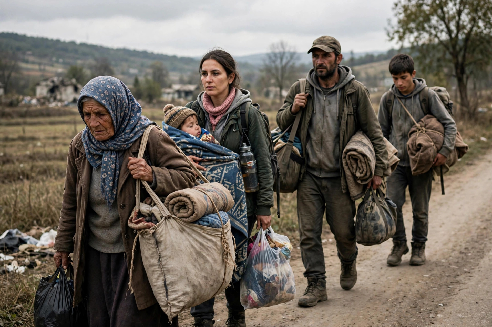
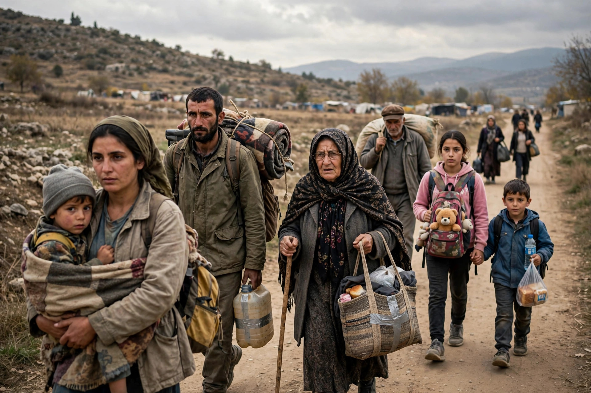

Forced displacement


Forced displacement (also called forced migration) is an involuntary or coerced movement of a person or people away from their home or home region. It may result from armed conflict, persecution, violence, human rights violations, development projects, or natural and human-made disasters. The displaced include refugees who cross international borders, internally displaced persons (IDPs) who remain within their own country, and asylum seekers awaiting determination of their claims. UNHCR estimated the global total of forcibly displaced people at more than 120 million by 2024 — roughly one in every 67 people on earth — driven by wars in Syria, Ukraine, Sudan, and elsewhere, and by the expulsion of the Rohingya from Myanmar.
Causes and forms
Conflict and persecution are the classic drivers, producing refugee flows protected under the 1951 Refugee Convention and its non-refoulement rule. Deliberate state policies — population transfers, expulsions such as the deportation of the Acadians, and individual exile — are among the oldest forms. Development-induced displacement, caused by dams, mines, and infrastructure, displaces millions more each year, while disasters displace tens of millions annually, mostly internally and often temporarily. Climate change is increasingly recognised as a multiplier of displacement risk, though people displaced across borders by environmental causes generally fall outside the refugee definition.
Protection frameworks
Protection is fragmented by category: refugees are covered by the Refugee Convention and UNHCR's mandate; IDPs by the Guiding Principles on Internal Displacement and, in Africa, the binding Kampala Convention; stateless displaced people by the 1954 Statelessness Convention. UNHCR, IOM, and humanitarian agencies coordinate assistance through camp and non-camp responses, while "durable solutions" — voluntary return, local integration, or third-country resettlement — remain elusive for most: average displacement now lasts decades, producing protracted refugee situations. Those who reach another state and claim protection enter asylum procedures.
See also
Guiding Principles on Internal Displacement · Political asylum · Population transfer · Deportation of the Acadians
Categories: Forced migration · Refugees · Human rights